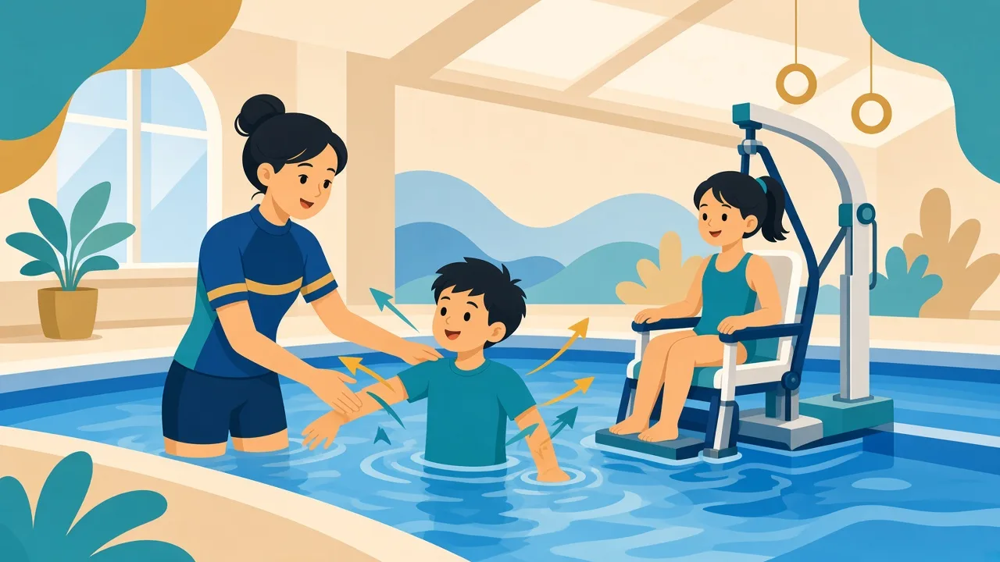

游泳不是要把 SEN 孩子變成競技泳手，而是給他們一個身體被承托、感覺被整理、努力被看見的空間。水的浮力、阻力與均勻壓力，往往正好對準許多特殊需要孩子的共同挑戰。
溫馨提示：本頁為家長教育整理，供認識特殊需要與游泳教學方向參考，並非醫療診斷或治療建議。孩子個別安排請 WhatsApp 與教練商討。
為甚麼是水？
- 浮力：水可大幅減輕體重負擔；陸上難站立或步行的孩子，在水中較易體驗直立與移動。
- 靜水壓：水均勻包裹全身，提供穩定的深壓觸覺，對感覺敏感或焦慮的孩子常帶來安穩感。
- 阻力：每個動作都對抗阻力，等於可自我調節強度的全身肌力訓練。
- 溫度與節奏：合適水溫有助放鬆；划水與呼吸節奏同時訓練心肺與自我調節。


六大發展方向
- 感覺統合：前庭、本體、觸覺同時啟動，幫助大腦整理感官訊息。
- 動作與肌力：低衝擊、高參與，改善平衡、協調、核心與耐力。
- 專注與執行功能：記住動作序列、等待輪到自己、變換任務——練習工作記憶、抑制控制與認知彈性。
- 情緒調節：深壓與節奏呼吸有助降低喚醒水平，提升安全感。
- 社交溝通：輪流、模仿、共同注意，在水中往往比陸上更容易練習。
- 自信與自主：學會終身可用的水中安全技能，建立「我做得到」的自我形象。
不同需要，水中各有重點（概念）
- 自閉症：可預測的水溫與壓力；視覺示範多於複雜口語。
- ADHD：全身活動調節喚醒；阻力令動作變慢、變清晰。
- 唐氏綜合症：低衝擊有氧，強化肌力與心肺（健康注意見專頁）。
- 肢體／協調困難：浮力減壓，反覆練習動作序列並即時獲得身體回饋。
延伸：自閉症 · ADHD · 唐氏綜合症 · 肢體・視覺・聽力 · 讀寫／動作協調
如何開始：安全、節奏、適配
- 安全先行：合適師生安排、合格教練；部分孩子若有癲癇、心臟或脊柱情況，請先諮詢醫生。
- 由水適應開始：不必急於學泳式。吹泡泡、洗臉、坐池邊拍水都是有效第一步。
- 感覺先行：觸覺過敏可先短時接觸；尋求強烈刺激者可逐步加入翻滾等活動。
- 結構要清晰：固定流程、視覺時間表、短指令、即時具體讚賞。
- 與其他專業連結：可與職治、物治、言語治療目標對齊，把課堂進步帶回日常。
家長常見問題
習泳能「根治」特殊需要嗎？
不能。目標是減少困難、提升適應與安全，而不是治癒診斷。把期望放在「可見的小進步」最健康。